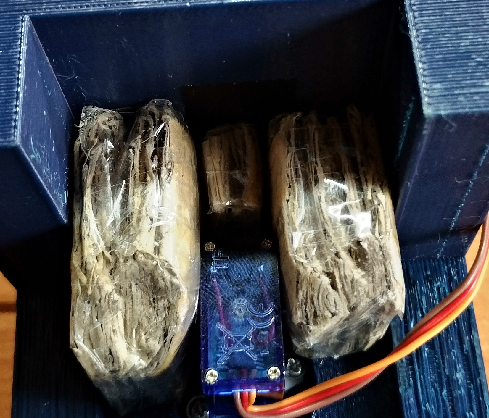
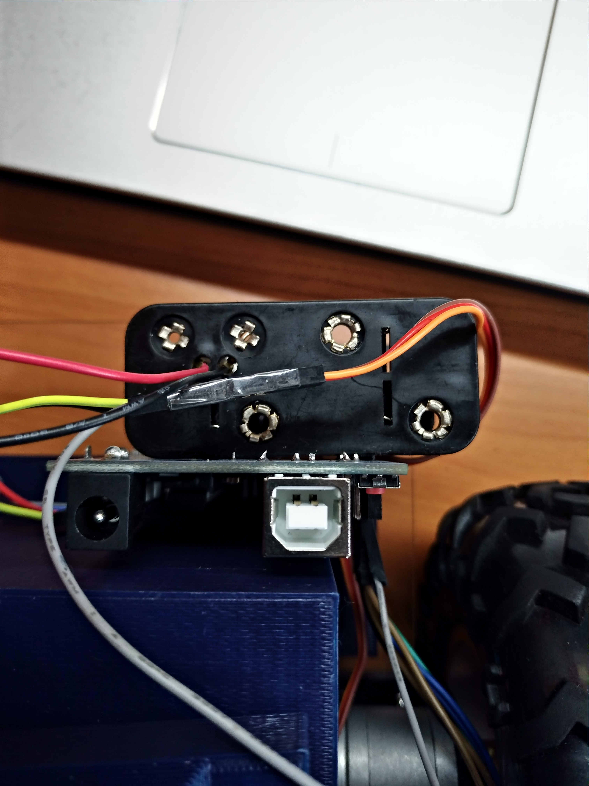

底盤製作
1. 將PC板切割為大小為13cm*21cm，並在下圖位置鑽孔
藍點孔徑為3mm，紅點孔徑為4mm
成品示意圖

2. 依照螺絲、墊片、滾珠輪、銅柱、PC板、螺絲的順序將兩組滾珠輪裝上
成品示意圖

3. 使用源達科技"4WD 智能小車底盤 越野型 直流減速電機 超大型底盤(適用JGA25-371)"套件中的鋁合金支架
將長條形和L形支架固定於PC板上
成品示意圖
4. 將L298N兩對輸出各自接上JGA25-371直流馬達，並在電源供應端先接上導線，正端接上開關，負端接上小塊麵包板作為共地
成品示意圖

5. 將馬達固定在L形支架上，並將L298N控制腳位in1~4、enA及enB接上杜邦線
成品示意圖
車體製作
1. 將軸承放置在車體與雲台中間
車體模型參考car_button.stl
雲台模型參考car_top.stl
成品示意圖
※備註：必須在底部先鑽洞讓車底跟底盤可以用螺絲連接，以及讓滾珠輪的螺絲不會卡住；或是直接修改模型檔案在正確位置挖洞※

2. SG90伺服馬達鎖上十字形支架，並且修改長度長徑小於2.3cm
成品示意圖
3. 將SG90伺服馬達固定在雲台支柱下方
成品示意圖

※備註：必須使用厚紙板填補縫隙讓伺服馬達不易偏移；或是直接修改模型檔案製作凹槽※

組合
1. 將底盤與車體組合，要注意不要壓住任何導線
成品示意圖

2. 連接Arduino的配線，連接如下
digital12 =====> SG90訊號線(橘色)
digital11 =====> L298N控制腳位enB
digital10 =====> L298N控制腳位in4
digital9 =====> L298N控制腳位in3
digital7 =====> L298N控制腳位in2
digital6 =====> L298N控制腳位in1
digital5 =====> L298N控制腳位enA
5V =====> SG90電源線(紅色)
GND =====> SG90接地線(棕色)
GND =====> 小塊麵包板共地
analog4 =====> I2C SDA訊號(RPI GPIO0(pin3))
analog5 =====> I2C SCL訊號(RPI GPIO1(pin5))
成品示意圖
2. 將Arduino固定在車體左後側
成品示意圖
3. 將Arduino固定在車體左後側
成品示意圖
